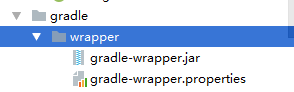

作为Android开发人员，很有必要学习一下Flutter，那么Flutter是什么呢？它到底有什么作用呢？我们一一来揭晓。
Flutter是谷歌的移动UI框架，可以快速在iOS和Android上构建高质量的原生用户界面。 Flutter可以与现有的代码一起工作。在全世界，Flutter正在被越来越多的开发者和组织使用，并且Flutter是完全免费、开源的。它也是构建未来的Google Fuchsia应用的主要方式。Fuchsia是谷歌继Android和Chrome OS之后开发的第三个系统，未来，谷歌是计划将Flutter作为这款操作系统的构建方式的。
Flutter实际上是一个包含多种内容的软件包，它是用来创建移动2D应用程序SDK的软件开发包，如果你计划在某些游戏中使用3D应用程序，那么Flutter将无法满足你的需求，但如果你的计划是在APP商店中的大多数的2D应用程序，那么Flutter就是你的选择。
Flutter软件包中最重要的就是编程框架，编程框架使用Dart作为编程语言。而实际上，我们不会直接调用Dart，所以我们不需要去深入学习Dart语言。Flutter附带了大量的小控件，能够帮助开发者省去很多功夫。
现在我们就来看看如何下载安装Flutter，首先浏览器搜索Flutter，找到官网进入，点击Get started。
选择对应的操作系统，就会跳转至下载界面。
由于在国内访问Flutter有可能会受到限制，Flutter官方为中国开发者搭建了临时镜像，大家可以将如下环境变量加入到用户变量中。
PUB_HOSTED_URL:https://pub.flutter-io.cn
FULTTER_STORAGE_BASE_URL:https://storage.flutter-io.cnFlutter镜像设置完成以后，接下来就可以获取Flutter SDK了。去Flutter官网下载最新可用的安装包。下载完成后解压即可。
解压完后，打开flutter文件夹，找到flutter_console.bat，双击运行，进行命令行的安装。
当看到这样的一个控制台界面，说明Flutter启动成功。启动成功后，我们还需要配置Flutter的环境变量。需要将bin文件夹的位置配置到用户环境中。需要注意的是：这里配置的是用户变量，不是系统变量。将bin目录位置添加到用户变量的path中。
配置完后，我们就可以使用Flutter命令了，打开一个控制台，输入指令：
flutter doctor这是一条用于检查当前电脑是否包含运行Flutter的全部环境。运行该条指令便会去自动下载所需资源。
需要注意的是，打勾的地方说明资源下载成功，而感叹号的位置说明资源下载异常，我们需要去解决这些异常的下载，才能使Flutter正常地运行。
我这里因为有了Android的运行环境和Android Studio开发工具，所以都是感叹号，而没有这些东西的同学就会打一个红色的叉，看到红色的叉也不要惊慌失措，只需要将Android的环境下载好即可。
下载好Android环境后，我们接着输入指令：
flutter doctor --android-licenses该条指令的作用是接受Android许可，执行该条指令后会多次询问是否许可，只需输入'y'回车即可。
再次输入flutter doctor来检查一下环境。
证明第二项的异常我们解决了。
接下来我们解决第三个异常，也就是Android Studio的异常。
我们打开Android Studio，点击File，然后点击Setting，最后点击Plugins，打开插件窗口，在该窗口中点击Browse repositories，选择从网络上下载插件。在搜索框中搜索Flutter并下载，在下载前Android Studio会询问是否同意下载Dart插件，我们允许即可。下载完成后重启Android Studio，我们再次到控制台中检查一下资源，输入flutter doctor指令，会发现，第三项也打勾了，问题成功解决。
第四项异常是因为IDEA没有安装Flutter的插件，这里我们只用Android Studio进行开发，所以可以不用管，没有这个开发工具的同学也不会产生这个问题。那么接下来，我们看最后一个异常，这个异常是因为现在没有设备连接，所以我们必须准备一个Android设备。
经过前面的一些操作，Flutter总算是成功安装上来了，那么，接下来，我们就尝试创建一个Flutter项目并运行到设备上。
在这之前，我们需要再设置一些信息，在Android Studio中点击File，然后点击Setting，找到Flutter设置界面。
将我们最开始下载的Flutter的解压文件路径设置上去，Dart我们可以不用设置，它会自动去寻找路径。设置完成后点击OK，然后新建一个Flutter Project，点击Flutter Application。
点击Next，然后点击Finish。等待片刻，Android Studio会自动帮我们构建开发环境。构建完成后我们右上角选择一下运行设备，然后点击运行。
然而点击运行之后，有些同学会发现Android Studio停留在了这个界面。
再也没有变化过，这不禁让人感到奇怪，这么长的构建时间，它到底在干什么？其实这不奇怪，展开gradle-wrapper文件夹。

发现了没，构建工具并不存在，所以，Android Studio其实就是在下载构建工具，通过观察文件夹变化，我找出了它需要下载的版本。
这个版本确实是我所有构建版本中没有的，然后因为网络的原因，下载速度极慢，于是便出现了刚才的那一幕，所以，该怎么解决呢？两种办法，要么就一直等，网速再慢，几十MB的东西下个一天还下不完吗？哈哈，开个玩笑。第二个办法，就是自己把它需要的构建版本下载好，然后放到这个文件夹下面去。当然，还是有其它办法的，就是去gradle-wrapper.properties文件中将构建工具版本改为自己已经有的，这样也是可以的，我就不演示了。
将下载完的构建工具放进去，我们停止构建，然后重新运行，果然这一次就快了许多，应用很快就运行到了Android设备上。
这是Flutter项目自动生成的，我们并没有编写一条代码。
需要注意的是，很多同学可能在这里还会遇到一些问题，比如在运行的时候报这个错。
Error:FAILURE: Build failed with an exception.
* What went wrong:
Could not resolve all files for configuration ':app:debugCompileClasspath'.
> Could not resolve com.google.android.gms:play-services-ads:latest.release.
Required by:
project :app
> Could not resolve com.google.android.gms:play-services-ads:12.0.1.
> Could not get resource 'https://jcenter.bintray.com/com/google/android/gms/play-services-ads/12.0.1/play-services-ads-12.0.1.pom'.
> Could not GET 'https://jcenter.bintray.com/com/google/android/gms/play-services-ads/12.0.1/play-services-ads-12.0.1.pom'.
> Read timed out
* Try:
Run with --stacktrace option to get the stack trace. Run with --info or --debug option to get more log output. Run with --scan to get full insights.
* Get more help at https://help.gradle.org
BUILD FAILED in 35s这还是因为网络的原因，无法下载到这些资源文件，解决方案如下：
在project级别下的build.gradle文件中添加如下代码：
buildscript {
repositories {
google()
jcenter()
}
dependencies {
classpath 'com.android.tools.build:gradle:3.1.1'
classpath 'com.google.gms:google-services:4.0.1' //谷歌服务库依赖
}
}
allprojects {
repositories {
google()
jcenter()
mavenCentral ()
maven {url 'https://dl.bintray.com/jetbrains/anko'} //这个是解决这个问题的关键
}
}
task clean(type: Delete) {
delete rootProject.buildDir
}这样问题应该就解决了，我也不可能一一地列举出所有的问题，如果大家还是碰到了问题，可以自行百度解决。
经历了千辛万苦，第一个Flutter项目终于成功运行起来了。Flutter打包出来的是纯原生应用，和浏览器应用完全不同，原生应用指的是安装在手机内部会带图标的应用，这种应用是可以发布到Android市场或者App Store里面的。
最后贴上gradle构建工具的下载网址：http://services.gradle.org/distributions/